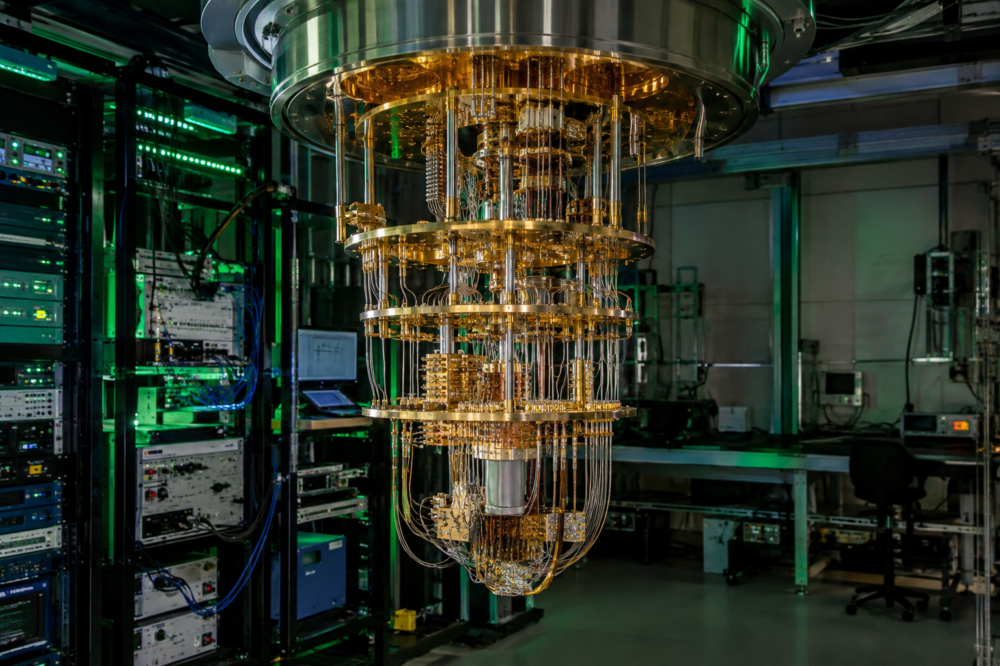
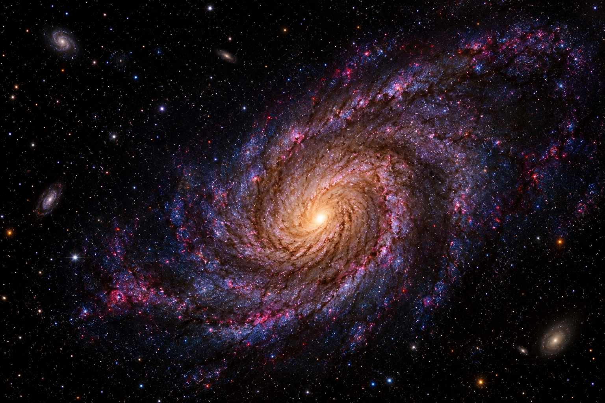
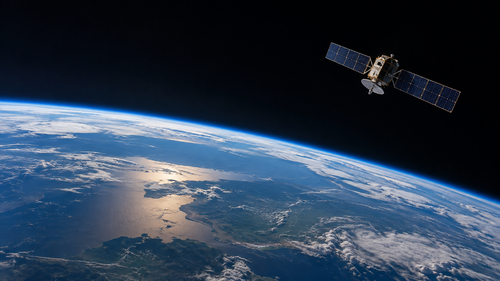
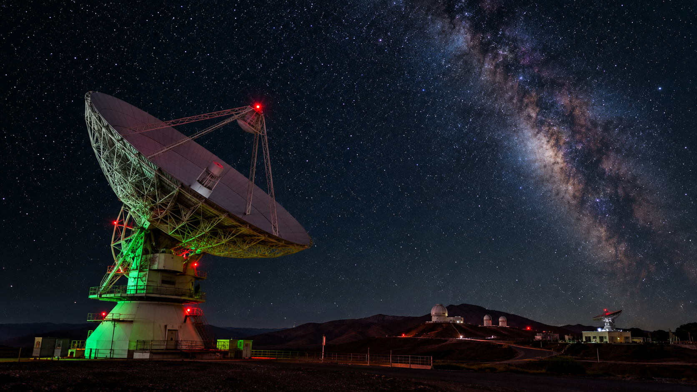

Quantum Information Science
Quantum error correction, noise channels and Kraus operators, quantum communication and sensing, and quantum computing and simulation.
ECE Applicant · Quantum Research · Aspiring Physicist
I studied Electronics Engineering and am drawn to the physics that underlies electronics and signals. Through electronics, computing, and system design, I study noise in quantum, communication, and sensing systems, with hands-on research in Siganl Processing, quantum noise parameter learning and quantum error correction. I am planning on pursuing a graduate degree, and my long-term goal is to become a physicist working on quantum mechanics, astrophysics & cosmology, and relativity & gravitation.
ABOUT
Physics has been my main interest since school. I studied it for two years (Class XI and XII), and did laboratory practicals. I chose Electronics & Instrumentation Engineering because it teaches how physical systems are measured, built and controlled.
I wanted a career in physics-based research, and ECE is where physics meets devices, communication, sensing and space systems. My undergraduate work on quantum noise, error correction and sensing is where these interests already meet, supported by deep learning, computer vision and scientific data analysis as tools.
I have built a solid physics foundation, from fundamentals to intermediate topics, through coursework and self-study. I now want to take it further through research in an ECE group.
Sensors, embedded system design, IoT, radar, bio-optical instrumentation, multi-sensor and decision systems, electric vehicle technology and intelligent sensing.
Simulation, scientific computing, deep learning, Scientific data analytis, Machine Learning and computer vision.
Quantum computing, quantum error correction, noise channels, quantum communication and sensing.
Space communication links, GNC, astrodynamics and the space environment.
Quantum mechanics, electromagnetism, thermodynamics and astrophysics.
Calculus and linear algebra, advanced calculus and complex analysis, transforms and boundary value problems, probability and stochastic processes, differential equations.


RESEARCH INTERESTS
Quantum error correction, noise channels and Kraus operators, quantum communication and sensing, and quantum computing and simulation.
Embedded systems, instrumentation and sensor analytics; space links, astrodynamics, GNC and the thermodynamics of the space environment.
The foundations and applications of physics: quantum mechanics, electromagnetism, thermodynamics, relativity and astrophysics.
Simulation, numerical methods and data-driven approaches to complex physical systems, from physics and astronomy to environmental science.
Deep learning, reinforcement learning, physics-informed and scientific machine learning, used as tools for physical problems.
Image understanding for scientific and sensing applications: astronomical imaging, remote sensing and real-world intelligent sensing.
Questions I want to work on
EXPERIENCE

Research on quantum error correction and noise modeling, with computer vision, IoT and scientific computing projects alongside. Guide: Dr. Indirani, Mentor: Dr. G. Y. Rajaa Vikhram. S
Represented about 60 students and coordinated communication between students, faculty and department administration.
Coordinated departmental technical activities involving more than 50 students.
SELECTED PROJECTS
Studied how 3-qubit and 7-qubit error-correcting codes protect qubits against noise and decoherence in deep-space links.Simulated quantum error-correction performance under noisy channel conditions and evaluated its potential to improve quantum-state transmission reliability.
View Project ↗Modeled noise channels with Kraus operators and density matrices, and trained a neural network to learn their parameters. Achieved convergence of quantum noise parameter estimates within 50 training epochs on simulated Kraus-channel data.
View Project ↗Classified galaxy morphology from astronomical image data using a convolutional neural network (CNN). Dataset and accuracy: Galaxy image dataset; classification accuracy evaluated on held-out test data.
View Project ↗Built a deep learning model that predicts protein secondary structure (alpha-helix, beta-sheet or coil) directly from amino acid sequences. Encoded sequences for neural network input, trained with a categorical loss, and evaluated predictions against true structures using accuracy and Q3 score.
BioPythonPredicted mountain lion (Puma concolor) habitat suitability across the USA from GBIF occurrence data and environmental layers, and generated suitability maps.
View Project ↗Developed a simulation-based framework for AI-assisted radar signal processing: modeled noisy radar returns, extracted features, and applied neural network detection with reinforcement learning for adaptive beam control.
TensorflowBuilt an ESP32-based environmental monitoring system with sensor acquisition and cloud-connected visualization.
SensorsSelf-study of the physics behind my research, from standard textbooks and MIT OpenCourseWare.

EDUCATION
Kattankulathur, Tamil Nadu, India
Thuraiyur, Tamil Nadu, India
SKILLS
Python · C · C++ · R
Programming for machine learning, scientific computing, data analysis, and engineering applications.TensorFlow · PyTorch · scikit-learn · CNNs · Deep Learning
Machine learning, deep learning, neural networks, and scientific AI.NumPy · Pandas · Matplotlib · MATLAB · Scipy & Seaborn
Scientific data processing, statistical analysis, visualization, and exploratory data analysis.OpenCV · Image Processing · Grad-CAM · CNNs
Image processing, visual learning, image classification, and model interpretation.Qiskit · Cirq · PennyLane · QEC · Kraus Operators · Quantum Noise
Quantum circuits, quantum simulation, quantum error correction, quantum channels, and quantum noise analysis.ESP32 · Sensors · Embedded Systems · IoT
Sensor acquisition, embedded system design and cloud-connected monitoring.Git · GitHub · Jupyter Notebook · IBM Quantum
Version control, research notebooks, computational experimentation, and quantum-computing platforms.
Scholarships, presentations and certifications.
Academic scholarship awarded during undergraduate study.
Served as class representative, supporting student-faculty coordination.
Mechnotron 2K25: ML-driven pressure control in embedded systems, Saveetha 2K24: real-time object detection and tracking
RSA & Quantum Algorithms, University of Colorado Boulder, Introduction to Quantum Information, KAIST,
I’d welcome a conversation with faculty and researchers working on quantum information, electronics-based sensing and communication, Computing, or physics.